Étude numérique du frottement macroscopique de matériaux granulaires par l'essai de pile conique
Alexandre Pirot, M. Henry, S. Yans, J. Lambrechts, V. Legat
Du tas de sable au chateau fort
Mouiller un milieu granulaire lui donne une meilleure tenue mécanique
shutterstock.com, vrt.be
Notre outils numérique: MigFlow
- Phase solide
- Gère de manière discrète les grains (DEM, NSCD)
- Permet une analyse à fine échelle
- Capture la dynamique des contacts
- Phase liquide
- Représenté par un milieu continu (FEM-PFEM)
- Résolu à une échelle sous-résolue / semi-résolue
- Modélisé à moindre coût
- Interactions empiriques entre fluide et solide
Constant et al. (2018)
Une paramètrisation couplée
Les équation de Navier-Stokes moyennées en volume (VANS)
- Équations de Navier-Stokes moyennées en volume (VANS) \[ \frac{\partial \phi}{\partial t} + \nabla\cdot\mathbf{u} = 0 \\ \rho\left( \frac{\partial \mathbf{u}}{\partial t} + \nabla\cdot\left( \frac{\mathbf{u}\mathbf{u}}{\phi} \right) \right) = \nabla\cdot\left( -p\mathbf{I} + \phi\mathbf{\tau} \right) + \mathbf{f} + \phi\rho\mathbf{g} \]
- Équation de la phase solide (2ème loi de Newton) \[ \frac{\partial}{\partial t}\left( m_i\mathbf{v}_i \right) = m_i\mathbf{g} - \left. V_i\nabla p\right\vert_{\mathbf{x}_i} - \mathbf{f}_{d,i} \]
- Paramétrisation de la traînée \[ \mathbf{f}_d = g\left( \phi \right)C_d\pi r \frac{\rho}{2} \left\vert\left\vert\mathbf{u} - \mathbf{v}\right\vert\right\vert\left( \mathbf{u} - \mathbf{v} \right) \]
Une expérience numérique simple
Un seau de sable qui se lève
Deux approches possibles pour modéliser des contacts
\[
\mathbf{M}\mathrm{d}\mathbf{v} = (\mathbf{f}_e + \mathbf{f}_q)\mathrm{d}t + \mathrm{d}\mathbf{p}
\]
- ▸Régularisation du saut de force
- ▸Résolution basée sur l'impulsion
- ▸Résolution itérative du contact
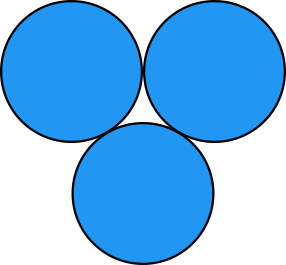
- ▸Intégration continue des forces
- ▸Résolution basée sur la pénalisation
- ▸Résolution continue du contact
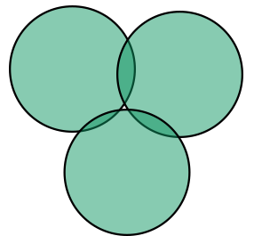
Formulation Contact Dynamics
Problème du contact en formulation non-régulière
\[
\begin{align}
&m_i\frac{\text{d}\mathbf{u}_i}{\text{d}t} = \sum_{i\neq j}^{N-1} \mathbf{r}_{ij} + m_i\mathbf{g} &(\text{2$^\underline{\text{ème}}$ loi de Newton}) \\
&\delta \mathbf{u}^+ = \delta \mathbf{u}^- + \mathbf{W}\mathbf{r} &\text{(Dynamique du contact)} \\
&g \geq 0 &\text{(Impénétrabilité)} \\
&\mathrm{r}_n \geq 0 &\text{(Non-attraction)}\\
&\mathrm{r}_ng = 0 &\text{(Condition de Signorin)}\\
&g = 0,\, \delta \mathrm{u}_n^- \leq 0 \implies \delta \mathrm{u}_n^+ = 0 &\text{(Non-restitution)}\\
&\lVert \mathbf{r}_t\rVert \leq \mu \mathrm{r}_n &\text{(Cône de Coulomb)}\\
&\lVert \delta \mathbf{u}_t^+ \rVert \neq 0 \implies \mathbf{r}_t = -\mu\mathrm{r}_n\frac{\delta \mathbf{u}_t^+}{\lVert \delta \mathbf{u}_t^+ \rVert} &\text{(Glissement)}
\end{align}
\]
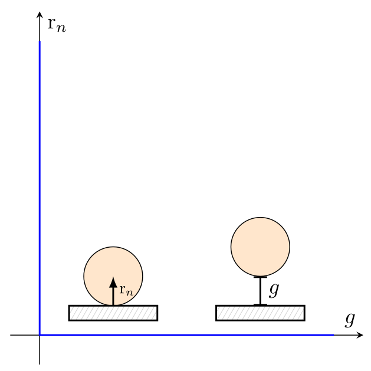
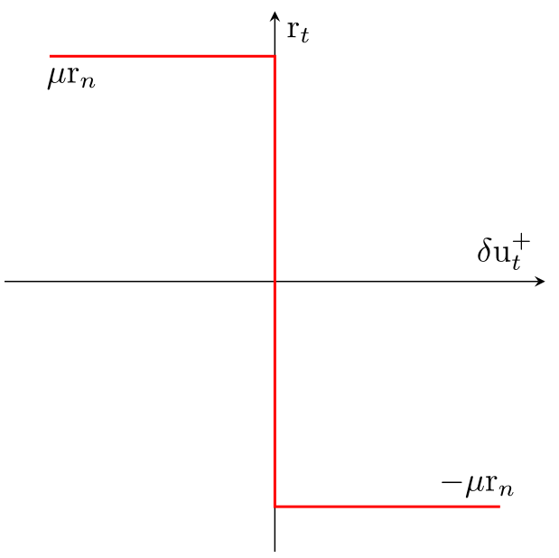
De simples disques
Formalisme non-régulier de Moreau avec frottement de Coulomb
On trouve des angles de repos transitoires trop faibles, même avec des coefficients de friction qui ne sont pas réalistes (> 1). Le frottement de Coulomb n'est pas le seul qui entre en jeu.
On manque les effets géométriques du sable.
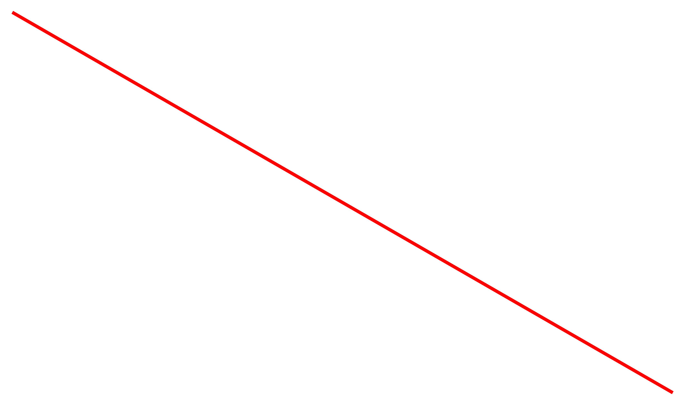
Le sable: des grains de toutes formes
Remplacer des grains par des polygones pour se rapprocher de la réalité
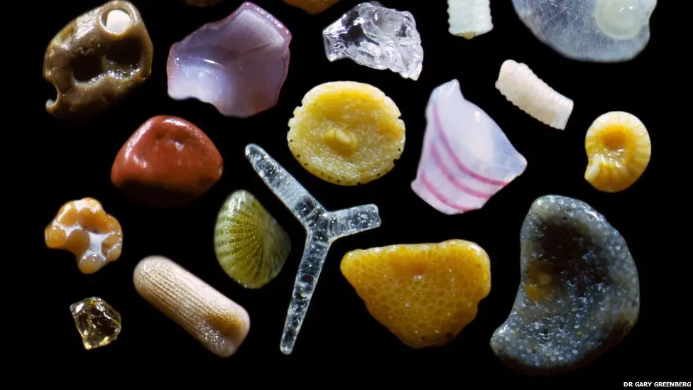
bbc.co.uk
Des polygones réguliers
Le problème des polygones classiques: une détection parfois compliquée
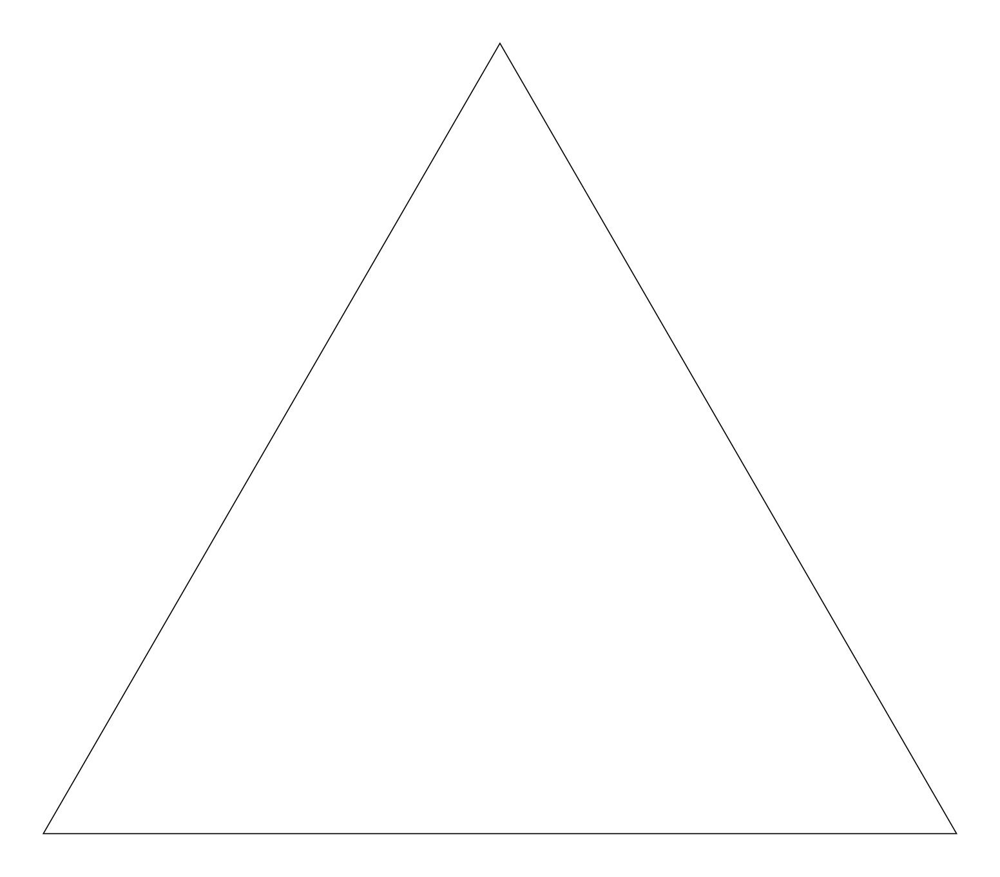
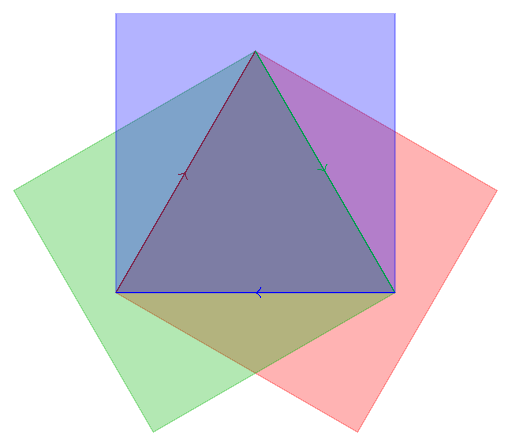
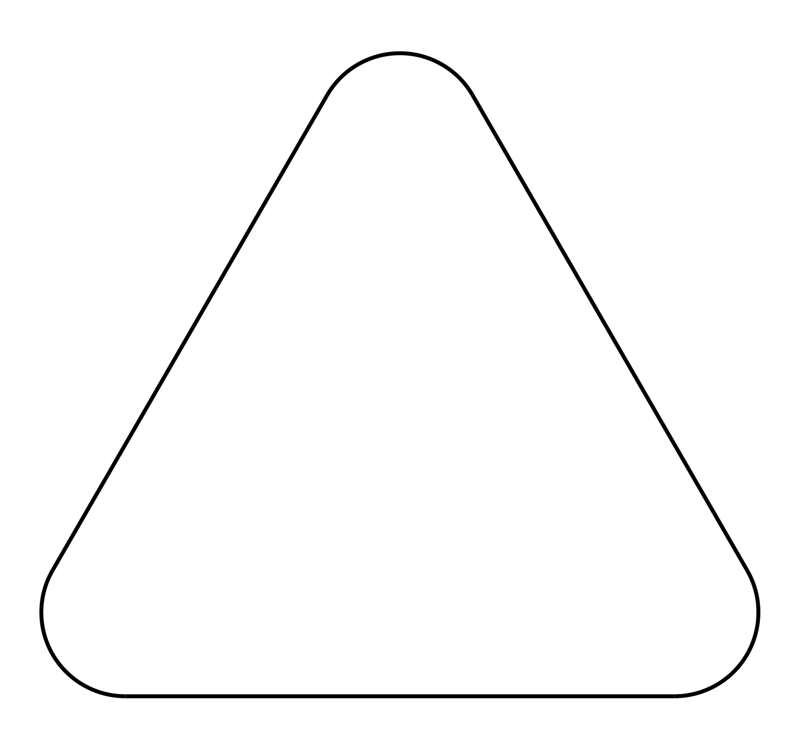
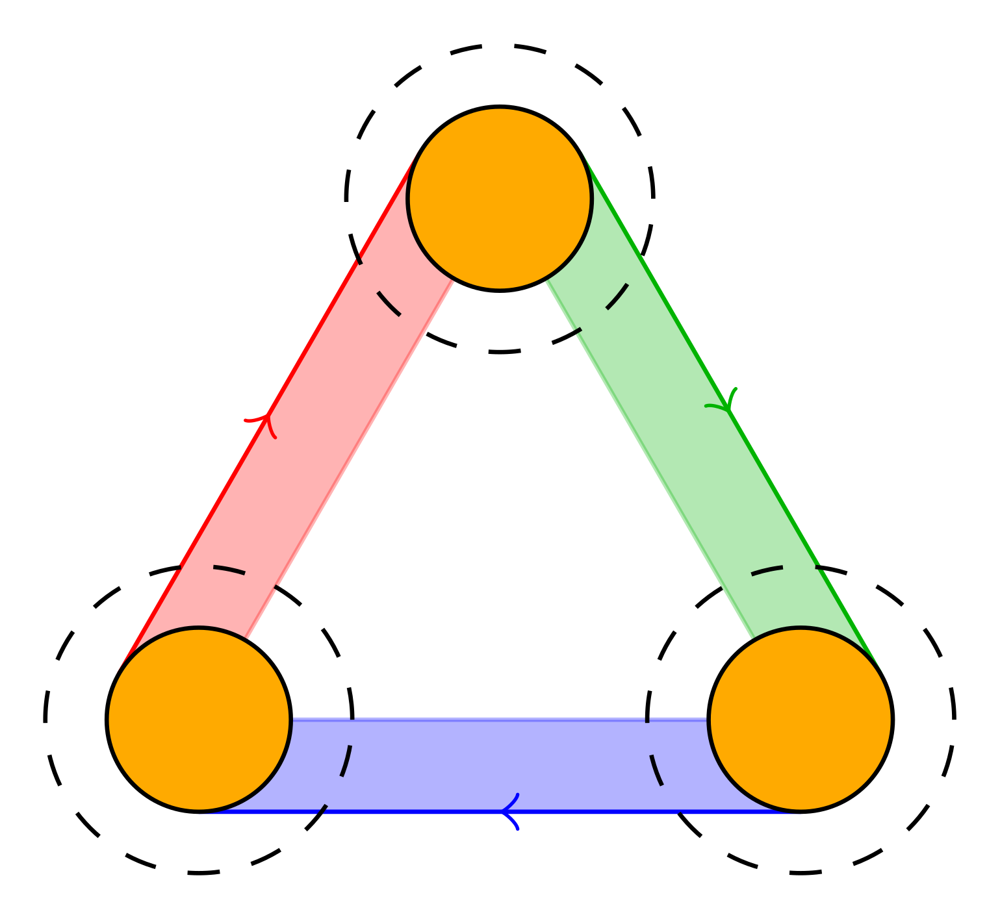
Des polygones réguliers
La solution: des polygones à sommets arrondis
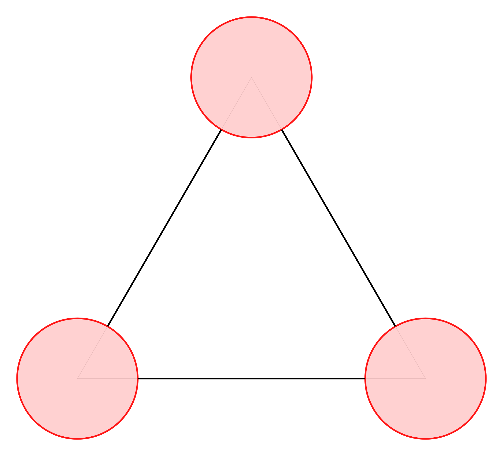
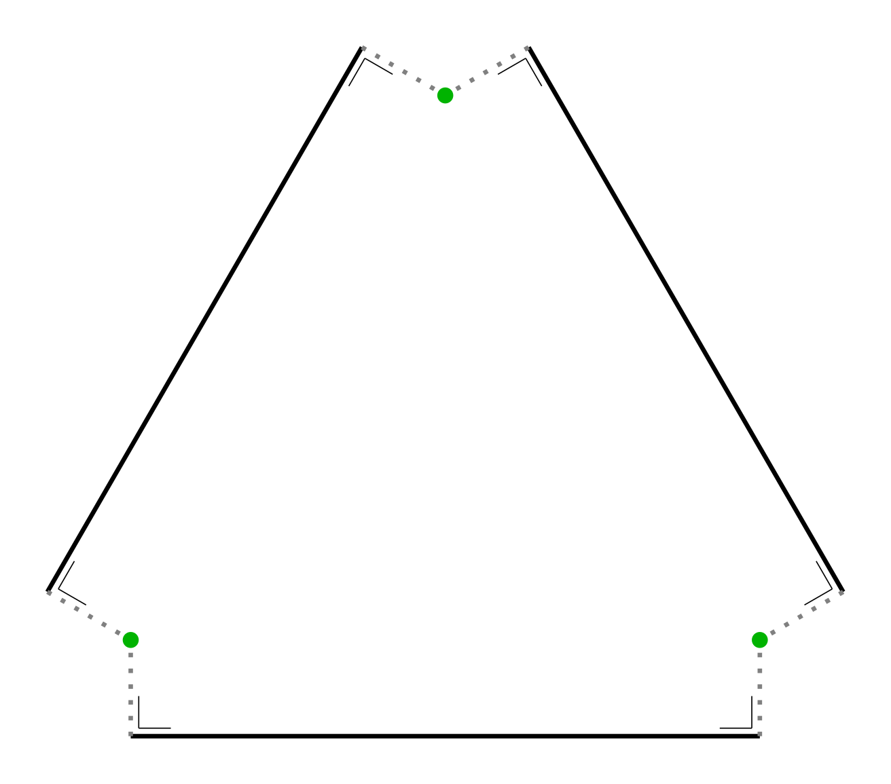
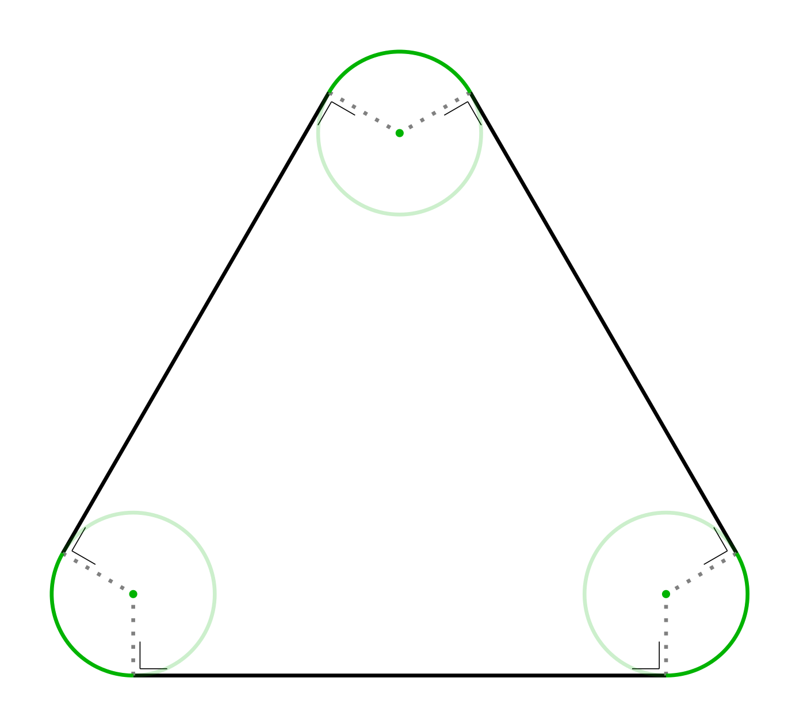
Des polygones réguliers
La solution: des polygones à sommets arrondis
Des polygones réguliers ...
On capture plus de comportements géométrique


De simples disques
Les origines du frottement de roulement
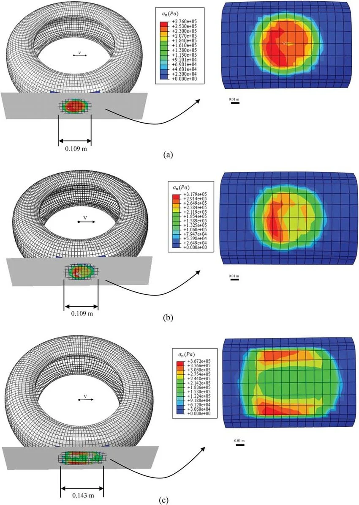
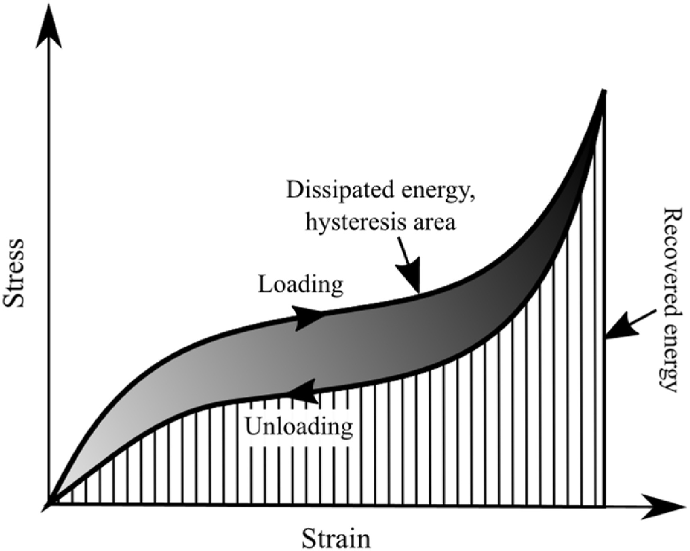
Behroozinia et al., “An investigation towards intelligent tyres using finite element analysis,”
Hyttinen et al., "Truck tyre transient rolling resistance and temperature at varying vehicle velocities - Measurements and simulations, Polymer Testing"
Hyttinen et al., "Truck tyre transient rolling resistance and temperature at varying vehicle velocities - Measurements and simulations, Polymer Testing"
Le problème du roulement
Tantôt sans glissement...


Le problème du roulement
... tantôt avec glissement


De simples disques
Un frottement supplémentaire est nécessaire: le frottement de roulement
Ce type de frottement peut être modélisé de manière analogue à Coulomb, mais sur une impulsion angulaire. Son introduction permet de capturer les bons angles de repos.
Si on revient à nos disques
Après s'être intéressé au sec, le cas mouillé: la cohésion
S'intègre facilement dans la loi de Newton
\[
m_i\frac{\text{d}\mathbf{u}_i}{\text{d}t} = \sum_{i\neq j}^{N-1} \mathbf{r}_{ij} + \color{red}{\sum_{i\neq j}^{N-1} \mathbf{r}_{ij}^\mathrm{c}} + m_i\mathbf{g}
\] mais aussi dans le problème de contact
\[
\begin{align}
&\delta \mathbf{u}^+ = \delta \mathbf{u}^- + \mathbf{W}\mathbf{r} \\
&g \geq 0 \\
&\mathrm{r}_n \geq 0 \\
&\color{red}{\mathrm{r}_c =f(g)} \\
&(\mathrm{r}_n + \color{red}{\mathrm{r}_c})g = 0 \\
&g = 0,\, \delta \mathrm{u}_n^- \leq 0 \implies \delta \mathrm{u}_n^+ = 0 \\
&\color{red}{g > g_c \implies \mathrm{r}_c = 0} \\
&\lVert \mathbf{r}_t\rVert \leq \mu \mathrm{r}_n \\
&\lVert \delta \mathbf{u}_t^+ \rVert \neq 0 \implies \mathbf{r}_t = -\mu\mathrm{r}_n\frac{\delta \mathbf{u}_t^+}{\lVert \delta \mathbf{u}_t^+ \rVert}
\end{align}
\]
Pour conclure
Pistes de développements futurs